JHON LENNON
| 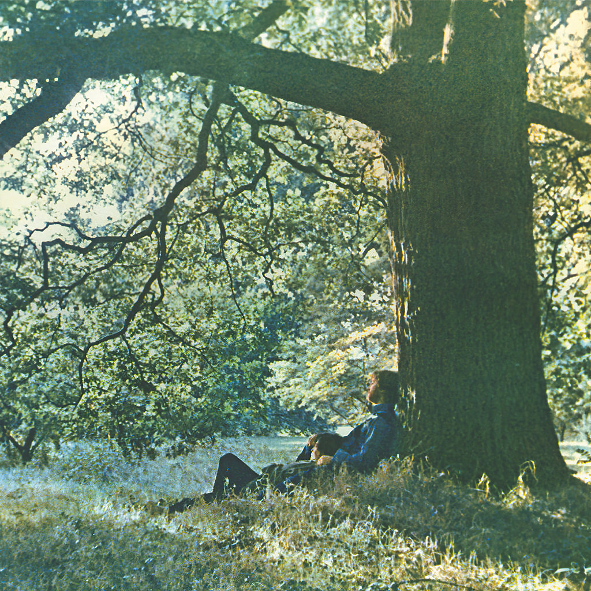 | 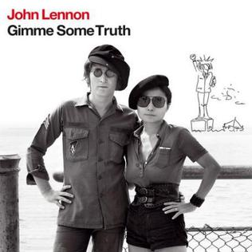 | 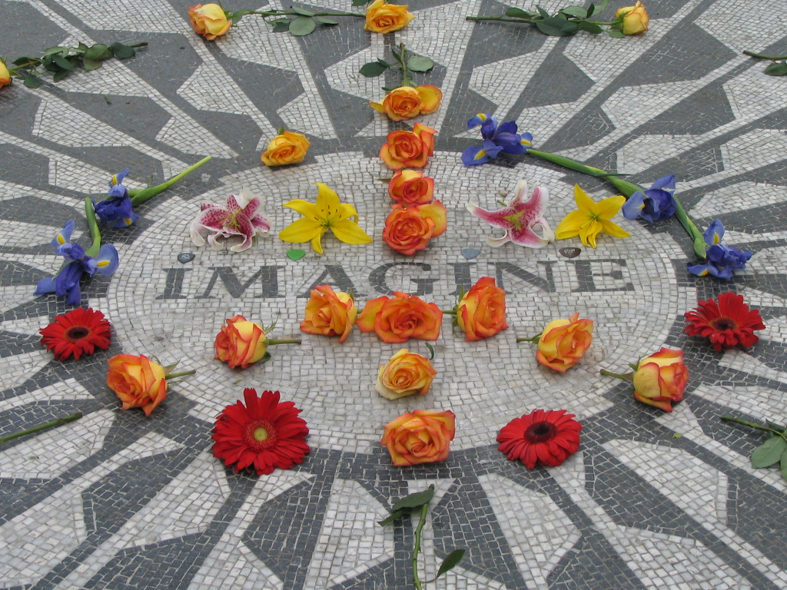 |  |
|---|---|---|---|
| Plastic Ono Band | Gimme Some Truth | Imagine | Live Peace In Toronto 1969 |
Per ascoltare altri suoi album clicca qui.
OZZY OSBOURNE
 |
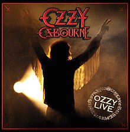 | 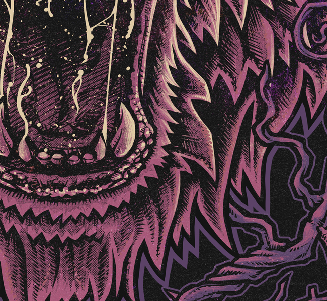 |  |
|---|---|---|---|
| Patient Number 9 | Diary of a Madman | Live Evil | Mob Rules |
Per ascoltare altri suoi albumclicca qui o qui per gli altri album dei Black Sabbath
NOEL GALLAGHER
| 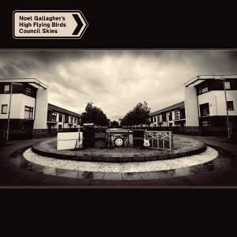 | 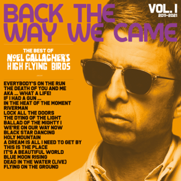 | 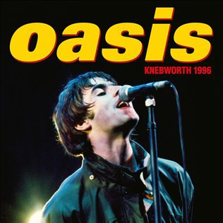 |  |
|---|---|---|---|
| Council Skies | Back the Way We Came Vol. 1 | Oasis Knebworth 1996 | Dig Out Your Soul |
Per ascoltare altri suoi albumclicca qui o qui per altri album degli Oasis
MIKA
 |
 |
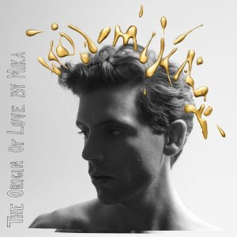 |  |
|---|---|---|---|
| Life In Cartoon Motion | The Boy Who Knew Too Much | The Origin Of Love | SongBook Vol. 1 |
Per ascoltare altri suoi album clicca qui.
ROBBIE WILLIAMS
| 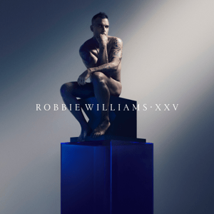 | 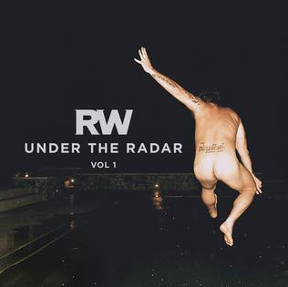 |  |
|
|---|---|---|---|
| XXV | The Christmas Present | Under The Radar Vol. 1 | Under The Radar Vol. 2 |
Per ascoltare altri suoi album clicca qui.
CHER
| 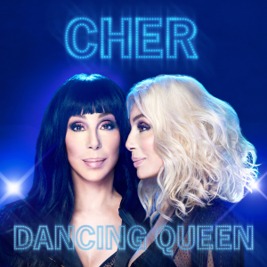 | 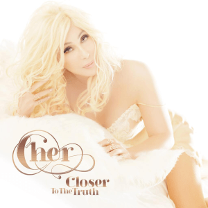 | 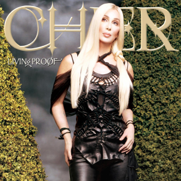 | 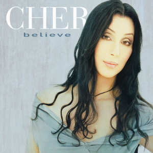 |
|---|---|---|---|
| Dacing Queen | Closer to the Truth | Living Proof | Believe |
Per ascoltare altri suoi album clicca qui.
LEE RYAN (Blue)
| 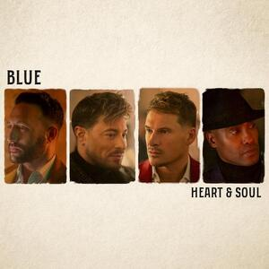 | 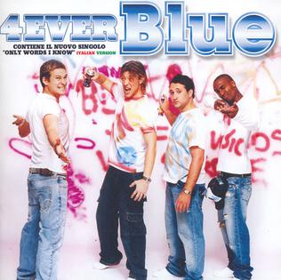 | 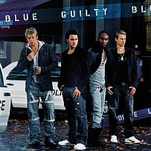 |  |
|---|---|---|---|
| Heart & Soul | 4ever Blue | Guilty | One Love |
Per ascoltare altri suoi album clicca qui.
IMMANUEL CASTO
| 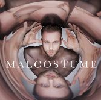 |  |
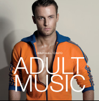 | |
|---|---|---|---|
| Malcostume | L'età del Consenso | The Pink album | Adult Music |
Per ascoltare altri suoi album clicca qui.